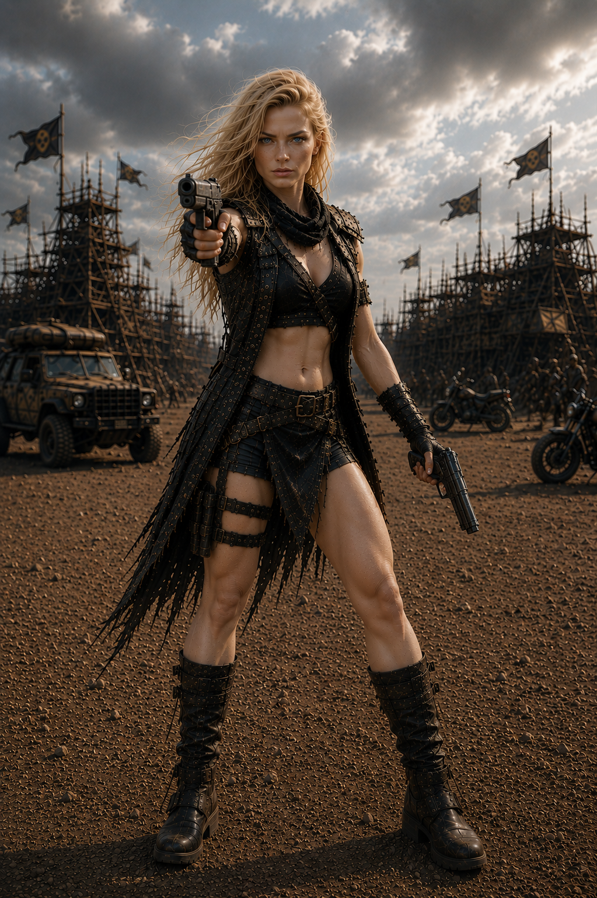

Herdeira de
duas forças.
As imagens mostram Pollyana preparada para confronto e ao lado de Nathan. O arquivo visual está aberto; sua história ainda será escrita.
0103

Um registro de combate confirma sua presença no território depois do Dia D. Função, perdas e trajetória permanecem protegidas até a conclusão da lore oficial.
As imagens mostram Pollyana preparada para confronto e ao lado de Nathan. O arquivo visual está aberto; sua história ainda será escrita.